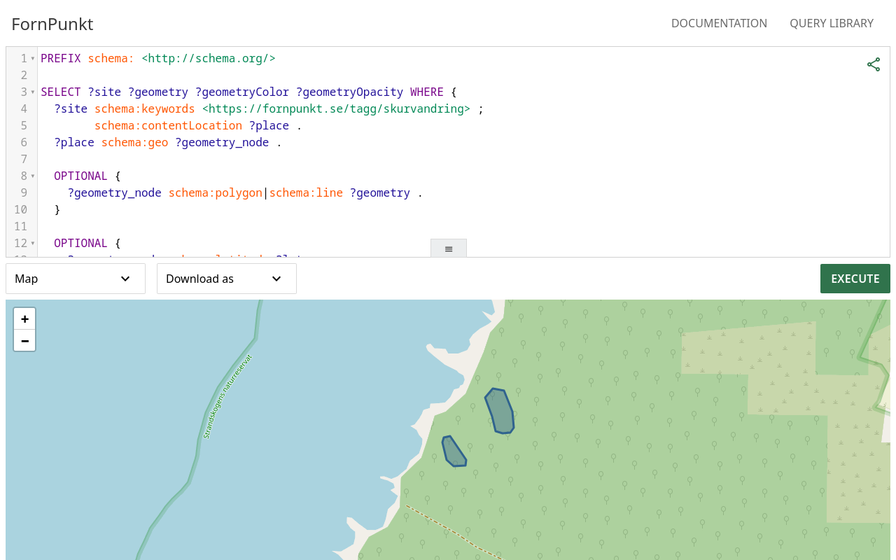
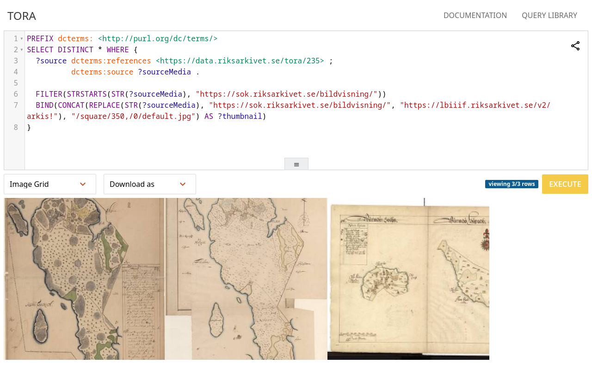
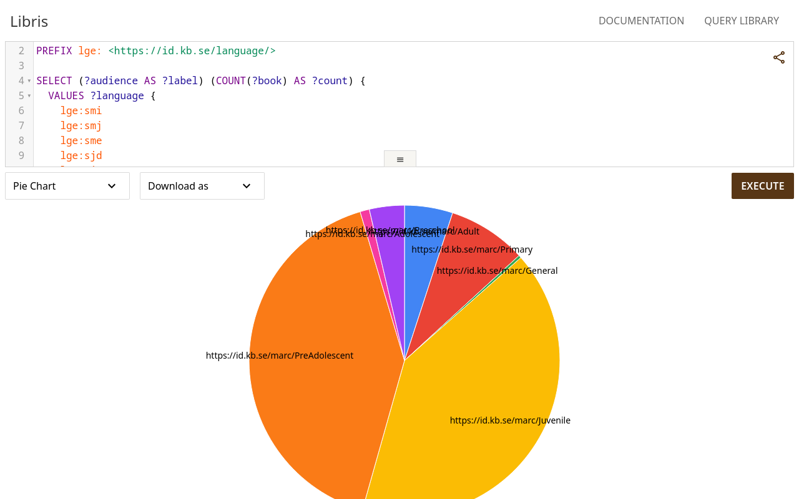

A platform-agnostic, configurable, and brandable SPARQL editor and visualization interface.
Works seamlessly with any SPARQL endpoint, making it the perfect choice for any semantic web project.
Customize every aspect of the editor to match your needs.
Easily adapt the look and feel to match your organization's branding guidelines.

FornPunkt is an open source citizen science platform on which the public documents historical sites. Its Thor instance utilizes our built-in user-interface tour and many of its example queries relies on Thors' map visualization features.

The National Archives' topographical register holds information about geographical and administrative units and divisions, their names, extent and connections, from the Middle Ages to the present day. The TORA demo instance utilizes Thor's integrated support for federation.

Libris is a national search service with information about titles in approximately 600 Swedish libraries, including the National Library. Libris has an extensive RDF ontology which Thor utilizes for its powerful autocompletion.